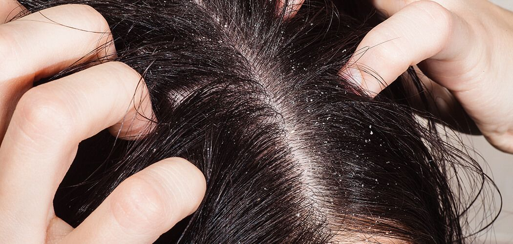

Dandruff
Non-Harmfull and can be cured using home remedies
Dandruff is a skin condition that mainly affects the scalp.Symptoms include
flaking and sometimes mild itchiness.It can result in social or self-esteem problems.A
more severe form of the condition, which includes inflammation of the skin, is known as seborrhoeic
dermatitis.
The cause is unclear, but believed to involve a number of genetic and environmental factors;the
condition may worsen in the winter.It is not due to poor hygiene,and the underlying
mechanism involves the excessive growth of skin cells.Diagnosis is based on symptoms.
There is no known cure for dandruff.Antifungal cream, such as ketoconazole, or salicylic acid
may be used to try to improve the condition.Dandruff affects about half of adults, with males
more often affected than females.In addition, people in all areas of the world are affected.
Onset is usually at puberty, and it becomes less common after the age of 50.
👉causes
 The cause is unclear but believed to
involve a number of genetic and environmental factors.
As the skin layers continually replace themselves, cells are pushed outward where they die
and flake off. For most individuals, these flakes of skin are too small to be visible.
However, certain conditions cause cell turnover to be unusually rapid, especially in the
scalp. It is hypothesized that for people with dandruff, skin cells may mature and be shed
in two to seven days, as opposed to around a month in people without dandruff. The result is
that dead skin cells are shed in large, oily clumps, which appear as white or grayish flakes
on the scalp, skin and clothes.Skin oil, commonly referred to as sebum or sebaceous secretions
The metabolic by-products of skin micro-organisms (most specifically Malassezia
yeast)
Individual susceptibility and allergy sensitivity.
The cause is unclear but believed to
involve a number of genetic and environmental factors.
As the skin layers continually replace themselves, cells are pushed outward where they die
and flake off. For most individuals, these flakes of skin are too small to be visible.
However, certain conditions cause cell turnover to be unusually rapid, especially in the
scalp. It is hypothesized that for people with dandruff, skin cells may mature and be shed
in two to seven days, as opposed to around a month in people without dandruff. The result is
that dead skin cells are shed in large, oily clumps, which appear as white or grayish flakes
on the scalp, skin and clothes.Skin oil, commonly referred to as sebum or sebaceous secretions
The metabolic by-products of skin micro-organisms (most specifically Malassezia
yeast)
Individual susceptibility and allergy sensitivity.